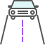
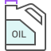

차량관리팁
운전자분들을 위한 차량 관리 팁!을 알려드립니다.

차량의 성능을 최상상태로 발휘하도록 유지하고 내구성 향상과 연비향상, 배기가스로 인한 환경오염등을 줄이기 위하여 신차길들이기를 하여야 합니다. 보통 오너 운전자들은 신차길들이기라면 엔진만 생각하는데 실제로는 모든 기능성 부품들이 이에 해당합니다. 신차길들이기에는 마음을 비우며 인내를 가지고 운전을 해야만 차량 성능을 최상상태로 유지하고, 차량의 수명을 연장시킬 수 있으며 연비 향상에도 도움이 됩니다.
주행거리가 2,000km까지가 중요!
- 주행거리가 2,000km가 될때 까지는 부품들이 제자리를 잡을 수 있도록 해야 합니다.
- 출발은 웜-업을 한 후에 하십시요.
- 시동직후 급출발은 피하고 웜-업후에 서서히 출발해야 엔진과 변속기에 무리를 주지 않습니다.
급과속, 과속, 급제동 NO!
- 급가속은 많은 연료를 필요로 하고 엔진부하가 커져 불완전 연소가 일어나게 됩니다. 또한,엔진오일의 열화로 인한 유해가스의 배출량도 많아 집니다.
- 과속은 엔진회전수가 과도하게 올라가며 이로 인해 기계적인 마모가 심하게 일어나 엔진의 수명을 단축시킵니다.
- 급제동은 현가장치나 하체부품 등이 제자리를 잡도록 하는데 전혀 도움이 되지 않습니다.
변속은 변속시점에 맞게!
- 수동변속기
엔진의 회전수가 2,000~3,000 RPM 정도를 유지하면서 변속을 해야 엔진과 변속기에 무리를 주지 않습니다. - 자동변속기
자동변속기는 자동으로 변속이 이루어지지만 변속기에 무리를 주지 않기 위해서 가속페달을 급하게 밟거나 놓지 않는 것이 좋습니다.

엔진오일은 엔진의 성능에 주요한 영향을 미치며 또한 염화되며 공기와 접촉으로 산화됩니다. 따라서 매일오일량 점검을 하여야 하며 주행거리나 사용기간을 고려하여 엔진 오일필터와 함께 정기적으로 교환해 주어야 합니다.
엔진오일량 점검
평탄한 곳에 주차 후 정상 작동 온도까지 엔진을 웜업시키십시오.
- 엔진시동을 끄고 5분정도 기다렸다가 오일 게이지를 뽑아 깨끗이 닦은 후 다시 끼웠다가 빼내서 게이지에 오일이 묻어 있는 상태를 확인합니다.
- 오일량은 'F'와 'L'사이에 있어야 합니다.
엔진오일 보충
평탄한 곳에 주차 후 정상 작동 온도까지 엔진을 웜업시키십시오.
- 오일필터 캡을 반시계 방향으로 돌려서 탈거합니다.
- 당사 추천 엔진오일을 보충하고 엔진 오일량을 다시 점검합니다.
- 오일필터 캡을 시계방향으로 돌려서 장착합니다.
엔진오일 및 필터 교환주기
엔진오일 및 필터는 반드시 당사 추천품으로 교환주기에 따라 동시에 교환합니다.
- 교환주기: 매 10,000Km 주행시 마다 (가혹조건시 매 5,000Km 마다)
브레이크 오일은 매일 주행 전 점검하여야 합니다. 보통 브레이크 오일이 줄어드는 이유는 브레이크 패드가 마모되는 경우가 많으므로 패드를 점검하여 필요 시에는 교환해 주어야 합니다.
점검
- 브레이크 액 저장용기에 브레이크액이 "MAX"와 "MIN" 사이에 있는지 점검하십시오.
오일 보충
- 용기주위를 깨끗이 닦아내고 캡을 엽니다.
- 규정오일을 넘치지 않도록 주의하며 천천히 넣습니다.
- 주의해서 캡을 닫습니다.
규정 오일 및 교환주기
- 규정오일: BRAKE FLUID DOT3
- 교환주기: 매 40,000Km 마다 교환
도로에서는 보행자가 최우선!
- 모든 보행자를 나의 부모, 형제, 자녀라는 생각으로 보호하는 마음을 가집니다. 법 상으로도 보행자 우선의 원칙을 규정하고 있고 운전자에 비해 보행자는 교통 약자이므로 운전자는 보행자가 스스로 피해갈 것이라는 안이한 생각을 삼가합니다.
- 보행자의 행동은 기대하는 만큼 민첩하지 못하므로 보행자가 나타나면 무조건 속도를 낮추어서 진행합니다.
- 보행자는 횡단보도를 안심하고 건너가므로 차가 갑자기 돌진해 들어올 때에는 피할 수 없습니다.
보행자의 일반적 행동 특성
- 보행자는 도로로 갑자기 뛰어드는 등 급해 서두르는 경향이 있습니다.
- 자동차의 통행량이 적다고 해서 무단 횡단하는 경우가 있습니다.
- 횡단 보도를 통행하기보다 현 위치에서 횡단하려 합니다.
- 보행자는 교통법규를 잘 알지 못해서 지키지 못하는 경우가 많습니다.
보행자의 보호 운전 요령
- 도로 이외의 곳(주유소, 차고 등)을 출입하기 위하여 보도 또는 길 가장자리 구역으로 운행할 때에는 그 직전에서 일시 정지하여 안전을 확인한 후 횡단합니다.
- 보행자 옆을 통과할 때에는 안전한 거리를 두고 서행하고, 물이 괸 곳을 통행할 때에 다른 사람에게 물이튀지 않도록 서행 운전합니다.
- 어린이나 유아가 보호자 없이 도로를 횡단하거나, 도로에 앉아 있거나, 놀이를 하는 등 교통 사고의 위험이 있는 것을 발견한 때, 맹인이 흰색 지팡이를 가지고 도로를 횡단하거나 지체장애인이 도로를 횡단하고 있을 때에는 일시 정지하여야 합니다.
contents2-2
contents3-1
contents3-2
contents3-3